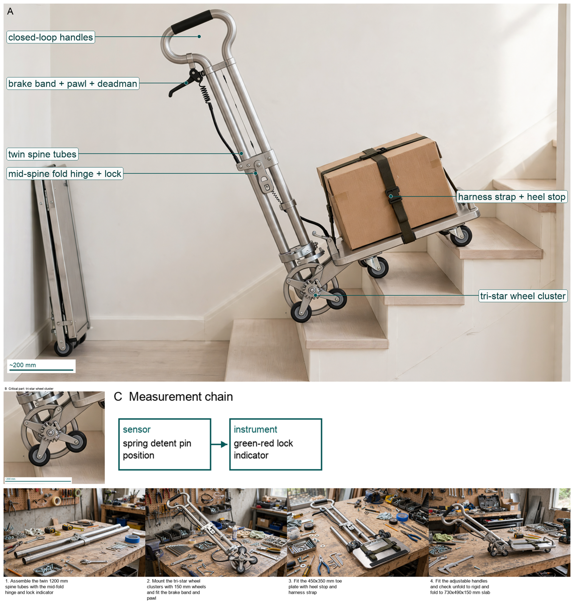
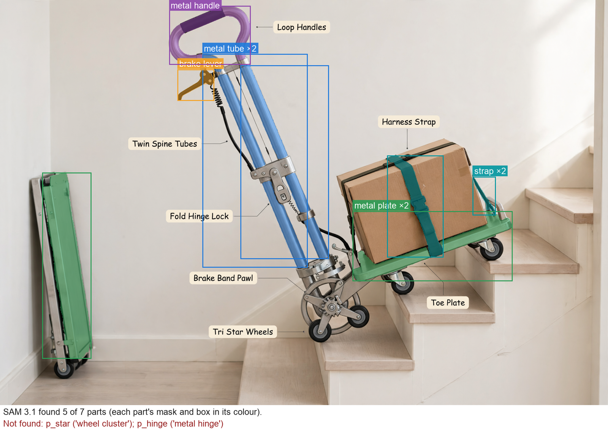

Hardware Scientist — concept report
Stair-climbing hand truck for parcel couriers
Couriers in old city centres carry heavy parcels up residential staircases with no lift. Design a hand truck that lets one courier move a load of about 60 kg up and down stairs safely, and that folds into a delivery van.
- Load about 60 kg
- Operated by one person
The concept

The trolley walks three small wheels on each side over 200 mm stair noses to lift a 60 kg box with long handles, holds on the edge with a brake that locks when you let go, and folds flat to a 730 mm slab for the van.
Load: toe plate -> twin spine tubes -> tri-star wheel cluster | Measured: spring detent pin position -> green-red lock indicator
Three decisive design choices
- Use 150 mm wheels on 140 mm orbit tri-star to step over 200 mm riser without bridging
- Use fail-safe friction brake plus pawl with deadman lever sized to 198 N m hold on nosing
- Operate at 15 deg lean against 21.8 deg tip with twin 30x2 mm spine and mid-hinge lock giving SF 9.02
Will the 6.8 deg tip margin and 226 N heave hold for all couriers with 60 kg parcels on worn or wet stair nosings?
What happened
How the picture was made

What the segmenter saw (SAM 3.1)
Code asked SAM for each part by a plain phrase and measured the boxes against what the design expects; the critic received the differences as evidence.

How the council changed
The council's instructions were not rewritten in this run.
References
73 sources found by the council's searches and the prior-art check (click to open)
- homedit.com — Standard Stair Step Height and Code Guidelines https://www.homedit.com/step-height/
- casterconnection.com — Ergonomic Casters Education https://casterconnection.com/caster-education/ergonomic-casters-education
- mdpi.com — Design of Manual Handling Carts: A Novel Approach Combining Corrective Forces and Modelling to Prevent Injuries https://www.mdpi.com/2313-576X/11/1/25
- mktg.idec.com — AWD ISO 11228 2.pdf https://mktg.idec.com/hubfs/EU_AWD/AWD_ISO-11228-2.pdf?hsLang=fr
- kruizinga.com — Transport trolley Fetra hand truck 2 long walls detachable https://www.kruizinga.com/transport-trolley-fetra-hand-truck-2-long-walls-detachable/854051_24
- electrochannel.com — Manual pallet truck. Safety in loading and unloading products https://www.electrochannel.com/en/pallet-truck-and-accessories/4142-hc-100-skid-lift-pallet-truck
- shop.standards.ie — UNE-EN 1757-4:2003 Safety of industrial trucks (2003) https://shop.standards.ie/en-ie/standards/une-en-1757-4-2003-8914_saig_aenor_une_aenor_une_20042/
- online.documentine.com — push it or pull it erg033 alberta - rolling-ankles-in-when https://online.documentine.com/rolling-ankles-in-when-walking/1/push-it-or-pull-it-erg033-alberta.html
- Noon.com — Lafulaifu Office chair, comfortable ergonomic HEIGHT AND ARMREST ADJUSTABLE office chair for office and home, white 49*46*92cm | Best Price UAE | Dubai, Abu Dhabi https://www.Noon.com/uae-en/office-chair-comfortable-ergonomic-height-and-armrest-adjustable-office-chair-for-office-and-home-white-49-46-92cm/Z5BE59CFF58F8E45F240FZ/p/?o=z5be59cff58f8e45f240fz-1
- youbeli.com — BOSSYTOO Wireless Grass Trimmer 2000mah 12V 350W Adjustable Rechargeable Electric Garden Push Lawnmower Garden Decorator (2000) https://www.youbeli.com/bossytoo-wireless-grass-trimmer-2000mah-12v-350w-adjustable-rechargeable-electric-p-3844664.html?language=cn
- engineerfix.com — How High Is a Stair? Standard Riser Heights Explained https://engineerfix.com/how-high-is-a-stair-standard-riser-heights-explained/
- officedepot.com — Global Hardlines Collapsible Handi Truck 220 Lb Capacity https://www.officedepot.com/a/products/487188/Global-Hardlines-Collapsible-Handi-Truck-39/
- michaels.com — Multi-functional Foldable Metal Hand Truck with 10 Inch Wheels Suitable for All Terrains, Color: Red | Michaels https://www.michaels.com/product/phandle-sack-truck-with-10-inch-wheels-and-foldable-load-area-229375005134536720
- amazon.com — POSTVI Folding Hand Truck,Foldable Dolly Cart With Wheels,500LB Heavy Duty Luggage Cart,6-wheel convenient Hand Truck,2 fixing ropes & 1 extra big storage bag Suitable for luggage,travel,moving(Black) - Amazon.com https://www.amazon.com/dp/B0FD7MCPRL/ref=cm_sw_r_as_gl_apa_gl_i_TQD0H6CZXE4FWF01QMG9
- amardeepsteel.com — Aluminium 6061 Pipes & Tubes | 6061-T6 Size Chart & Supplier https://www.amardeepsteel.com/aluminium-6061-pipes-tubes.html
- coremarkmetals.com — 6061 T6 Aluminum Round Tube | Coremark Metals https://www.coremarkmetals.com/6061-t6-aluminum-round-tube
- coremarkmetals.com — 6061 T6 Aluminum Round Tube | Coremark Metals https://www.coremarkmetals.com/6061-t6-aluminum-round-tube?dmA=1
- patents.justia.com — U.S. Patent for Pick-up truck loading ramp Patent (Patent # 3,976,209 issued August 24, 1976) - Justia Patents Search (1976) http://patents.justia.com/patent/3976209
- handtruckexpert.com — How to Open a Folding Hand Truck: Step by Step Guide https://handtruckexpert.com/how-to-open-a-folding-hand-truck/
- sylvanarms.com — AR HINGE (2017) https://sylvanarms.com/wp-content/uploads/2017/02/SylvanArms_AR-Hinge-Folding-Stock-Adapter-Manual_Mar2017_4x4-1b.pdf
- classicarchitecturetoday.com — Perfect Stair Dimensions for Safe, Stylish Spaces http://classicarchitecturetoday.com/perfect-stair-dimensions-for-safe-stylish-spaces/
- hxm-aluminum.com — 6061 Aluminum Tubes | Round & Square Tube Supplier – HXM Aluminum https://www.hxm-aluminum.com/products/aluminum-tube/6061-aluminum-tubes.html
- alibaba.com — Wholesale 6061 T6 Aluminum Price Per kg Smooth Surface Finish | Alibaba.com https://www.alibaba.com/showroom/6061-t6-aluminum-price-per-kg.html
- aviationaluminum.com — China Wholesale Discount Aluminium 6061 T6 Round Bar - 6061 Aluminum Tube – Miandi Manufacturers and Suppliers | Miandi https://www.aviationaluminum.com/wholesale-discount-aluminium-6061-t6-round-bar-6061-aluminum-tube-miandi.html
- toolstash.com — DeWalt Compact Folding Hand Truck (DXWT-FT512) - Toolstash https://toolstash.com/tools/rfy7dl-folding-hand-truck-dxwt-ft512
- trolleyoutlet.com.au — RuXXac Longnose Folding Hand Truck 125 Kg https://www.trolleyoutlet.com.au/RuXXac-Cart/RuXXac-Longnose-Folding-Hand-Truck-125-Kg
- spacepac.com.au — RuXXac Cart Business XL Folding Hand Truck - Spacepac Industries https://www.spacepac.com.au/?p=17088
- hahn-kolb.cn — Buy FETRA Flat-bed hand truck with wire grid walls https://www.hahn-kolb.cn/All-categories/FETRA-Flat-bed-hand-truck-with-wire-grid-walls/1610CL04_0508010714.cyid/1610.cgid/en/US/CNY/
- media.witglobal.net — Product data sheet Flat-bed hand truck, 2-axle with drawbar eye https://media.witglobal.net/stmedia/hhw/documents/LANG_en/686557183.pdf
- media.witglobal.net — Flatbed hand truck with wire grid walls https://media.witglobal.net/stmedia/hahnkolb/documents/LANG_en/HK-50267905.pdf
- hemeco.nl — Alu stair climbing hand truck AK 1326 - Hemeco https://hemeco.nl/en/alu-stair-climbing-hand-truck-ak-1326/
- waltersmercedesbenzsprinter.com — How Big is a Sprinter Van Door? https://www.waltersmercedesbenzsprinter.com/how-big-is-a-sprinter-van-door/
- lagunasprintervans.com — 2026 Mercedes-Benz Sprinter Cargo Van Dimensions & Length (2026) https://www.lagunasprintervans.com/mercedes-benz-sprinter-cargo-van-dimensions/
- carexpert.com.au — Ford Transit vs Mercedes-Benz Sprinter https://www.carexpert.com.au/ford/transit/vs/mercedes-benz/sprinter
- desertcart.ro — Teprovo Dolly Cart 340lb Aluminum Folding Hand Truck With Swivel | Desertcart Romania https://www.desertcart.ro/products/499894891-teprovo-dolly-cart-340lb-aluminum-folding-hand-truck-with-swivel
- desertcart.ec — Teprovo Dolly Cart 340lb Aluminum Folding Hand Truck With Swivel | Desertcart Ecuador https://www.desertcart.ec/products/499894891-teprovo-dolly-cart-340lb-aluminum-folding-hand-truck-with-swivel
- global.microless.com — Dolly Cart Folding Hand Truck Dolly 309 lb Capacity Aluminum Heavy Duty Hand Cart with Swivel Handle and 7 inch Rubber All Terrain Silent Large Wheels, Portable Foldable Cart for Moving Heavy Item Buy, Best Price. Global Shipping. https://global.microless.com/product/dolly-cart-folding-hand-truck-dolly-309-lb-capacity-aluminum-heavy-duty-hand-cart-with-swivel-handle-and-7-inch-rubber-all-terrain-silent-large-wheels-portable-foldable-cart-for-moving-heavy-item/
- apluswhs.com — Announcing the Inexpensive Stair Climbing Hand Truck https://apluswhs.com/blog/announcing-the-inexpensive-stair-climbing-hand-truck
- handle-it.com — Electric Stair Climbing Sack Trucks https://handle-it.com/xsto/
- mktg.idec.com — ISO 11228-2? https://mktg.idec.com/hubfs/EU_AWD/AWD_ISO-11228-2.pdf?hsLang=en
- webarchive.nationalarchives.gov.uk — Microsoft Word - updated version of report 9648.doc https://webarchive.nationalarchives.gov.uk/ukgwa/20100707143156mp_/http://www.hse.gov.uk/research/rrpdf/rr228.pdf
- afita.com.au — Document Page (2020) http://www.afita.com.au/wp-content/uploads/2020/03/AITA-0011-Using-Hand-Pallet-Truck-on-Incline-_Updated_101218.pdf
- ajproducts.ie — Compact aluminium stair climbing sack truck https://www.ajproducts.ie/p/compact-aluminium-stair-climbing-sack-truck-440578-440576
- ajproducts.co.uk — Compact aluminium stair climbing sack truck https://www.ajproducts.co.uk/p/compact-aluminium-stair-climbing-sack-truck-440578-440576
- robertdyas.co.uk — Blue Sack Truck | Robert Dyas https://www.robertdyas.co.uk/special-categories/blue-sack-truck?category=516
- huntoffice.ie — Hand Trolleys Ireland | Sack Trucks & Hand Carts | HuntOffice https://www.huntoffice.ie/hand-trucks
- qdmaterialhandling.com — Foot Stairclimber 120Kg Capacity|Sack Trucks|Material Handling Equipment http://www.qdmaterialhandling.com/Sack-Trucks-Foot-Stairclimber-120Kg-Capacity-136.html
- brand-supermarket.com — Draper Heavy Duty Stair Climbing Sack Truck Trolley - Brand Supermarket - compare prices on all your favourite brands https://brand-supermarket.com/review/Draper-Heavy-Duty-Stair-Climbing-Sack-Truck-Trolley.html
- diy.com — Heavy Duty Stair Climber Sack Truck, Steel Yellow Frame, 3 Linked Wheels, Folding Toe Plate For Extra Storage https://www.diy.com/departments/heavy-duty-stair-climber-sack-truck-steel-yellow-frame-3-linked-wheels-folding-toe-plate-for-extra-storage-200kg-capacity/5060139810678_BQ.prd
- screwfix.com — Sack Trucks | Manual Handling | Screwfix https://www.screwfix.com/c/storage-ladders/hand-trucks/cat831506
- uk.bestproducts.reviews — Best Stair Climbing Carts https://uk.bestproducts.reviews/stair-climbing-carts
- Toolstation.Com — Stair Climbing Sack Truck 120Kg https://www.Toolstation.Com/stair-climbing-sack-truck/p87414
- amazon.com — Amazon.com: Riosoc Electric Stair Climbing Hand Trucks, 200W 3 Adjustable Speeds with Light 440lbs Max Load Folding Dolly Cart Trolley, with 6 Wheels Motor Battery for Moving Furniture Home Warehouse Supermarket : Industrial & Scientific https://www.amazon.com/dp/B0BVV667V9/ref=cm_sw_r_cso_fb_apan_dp_H8787YC87AXTX0YZ8J7G
- device.report — VOLTSTAIR Dolly Titan Motorized Powered Stair Climbing Hand Truck User Manual https://device.report/manual/8505570
- top5best.com — Top 5 Best Stair Climbing Dolly (Expert Take) https://top5best.com/stair-climbing-dolly
- amazon.com — Upgraded Stair Climbing Cart, 280Lbs Heavy Duty Folding Hand Truck Dolly, Folding Shopping Cart, Portable Personal Stair Climbing Dolly with Bag for Moving, Luggage, Groceries, Travel, Office: Amazon.com: Industrial & Scientific https://www.amazon.com/dp/B0FS71JTYF/ref=cm_sw_r_cso_fm_apin_dp_M09285ZZASCT07Y0BYHW
- hasslefreehouse.com — 11 Best Stair Climbing Hand Trucks for Easy Moves https://hasslefreehouse.com/best-stair-climbing-hand-truck
- amazon.com — Stair Climbing Cart, 220 LBS Aluminum Stair Climber Dolly, Heavy Duty Folding Hand Truck Dolly with 6 Wheels, Telescoping Handle and Elastic Rope for Home, Moving, Groceries, Warehouse: Amazon.com: Industrial & Scientific https://www.amazon.com/dp/B0FP228P3S/ref=sr_1_9
- amazon.com — Upgraded Stair Climbing Cart, 280Lbs Heavy Duty Folding Hand Truck Dolly, Folding Shopping Cart, Portable Personal Stair Climbing Dolly with Bag for Moving, Luggage, Groceries, Travel, Office https://www.amazon.com/dp/B0FS71JTYF/ref=cm_sw_r_cso_cp_apan_dp_W24SGN6G4QCAJEW57NB0
- bestsportsgearpicks.com — Top 10 Stair Climbing Carts 2026 in the US | BestSportsGearPicks.com - Pro Reviews & Buying Guides https://www.bestsportsgearpicks.com/stair-climbing-carts
- patentcut.com — Stair climbing wheel with multiple configurations https://patentcut.com/US8764028
- bestreviews.guide — 10 Best Stair Climbing Carts 2026 in the US | There's One Clear Winner | BestReviews.guide https://www.bestreviews.guide/stair-climbing-carts
- patentsencyclopedia.com — STAIR CLIMBING DEVICE - Patent application https://www.patentsencyclopedia.com/app/20100108412
- patents.google.com — US20250027320A1 - Stair assistance device https://patents.google.com/patent/US20250027320A1/en
- patents.google.com — CN86201871U - Barrow for up and down stairs and ground https://patents.google.com/patent/CN86201871U/en
- patentimages-storage-googleapis-comproxy.boingomedia.com — 1498390519451722903-03512658 https://patentimages-storage-googleapis-comproxy.boingomedia.com/79/e3/4e/0cda66b16bfc58/US3512658.pdf
- eureka.patsnap.com — Self-adaptive mechanical power-assisted stair-climbing trolley - Eureka | Patsnap https://eureka.patsnap.com/patent-CN106080725A
- patents.google.com — US2772096A - Appliance hand truck provided with stair-climbing attachment https://patents.google.com/patent/US2772096A/en
- patents.google.com — AU2023207606A1 - Mechanical hand trucks with enhanced stair climbing and descending capability https://patents.google.com/patent/AU2023207606A1/en
- patents.google.com — US3191953A - Stair climbing wheel chair https://patents.google.com/patent/US3191953A/en
- patents.google.com — US11794798B2 - Mechanical hand trucks with enhanced stair climbing and descending capability https://patents.google.com/patent/US11794798B2/en
- patentcut.com — Fall arrest safety device https://patentcut.com/6837337
- patents.google.com — DE19951914A1 - https://patents.google.com/patent/DE19951914A1/en
Files
Run 20261102-105608_stair-climbing-hand-truck-for-parcel-cou · total cost $1.94 · conceptual illustration — physical performance not established.